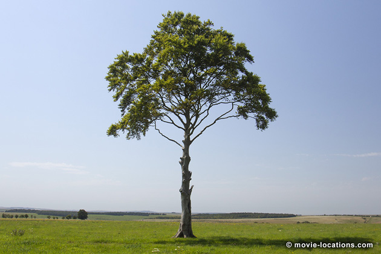
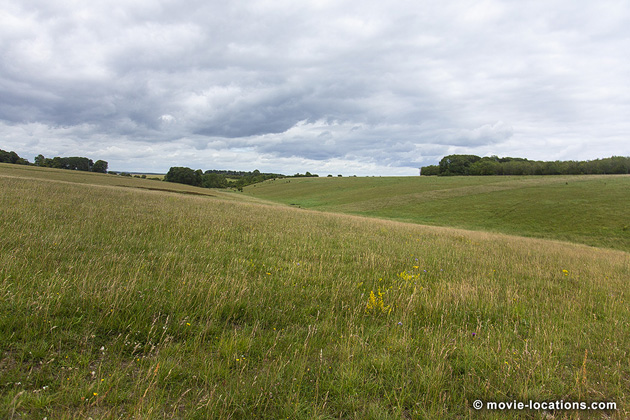
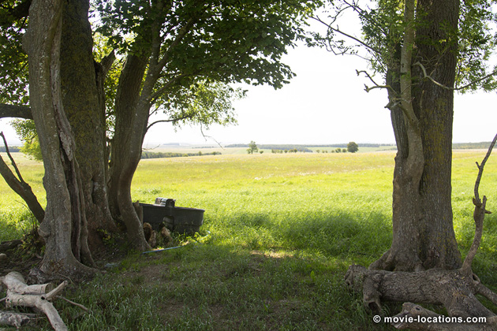
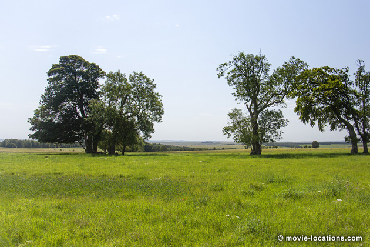

1917
Main Content

1917 was made entirely in the UK, with Salisbury Plain in Wiltshire, southern England, standing in for the flat, open landscape of ‘Northern France’, but with other locations found in Oxfordshire, Hertfordshire, County Durham and even Scotland, seamlessly blended in what appears to be a single take. There's a lot to cover, so don't forget the continuation on Page 2.
Director and co-writer Sam Mendes turns a simple story from the trenches of World War I into an intensely visceral experience by playing out the narrative without any traditional cuts, in what seems like real time.
To get an idea of the phenomenal technical achievement, and the contribution of Oscar-winning cinematographer Roger Deakins, listen to the commentaries on the DVD – but see the film on a full-size movie screen first.
Mendes and Deakins keep the camera shifting imperceptibly between locations and studio sets – all the while ensuring lighting and weather conditions remain consistent throughout.
1917 was made entirely in the UK, with Salisbury Plain in Wiltshire, southern England, standing in for the flat, open landscape of ‘Northern France’.
Salisbury Plain, covering 300 square miles of chalk grassland north of the city of Salisbury, is probably best known as the home of Stonehenge, the ring of prehistoric stones which have stood here for between four and five thousand years.

Much of the rest of the Plain is used for army training. Firing ranges and tank manouevres mean that access to some areas is restricted but the sheer extent of unbroken plain meant that the camera could be moved 360° without the constant need to remove buildings or other modern features digitally.
Six separate spots on the Plain were used and over a mile of trenches dug, though only after consultation to avoid disturbing the unique ecology or archaeology of the area. It's a tribute to the skills of the greenspeople on the production that, from the areas I saw, absolutely no sign of disturbance remains.
Simpler interior sets were built inside two large local barns, a standard practice to ensure filming can continue even when weather conditions are not ideal. In this case, though, instead of waiting for the sun, the sets were used when the sun was too bright for the film’s overcast tone.

The chaotic and somewhat ramshackle British trenches were dug near to the village West Chisenbury, on the A345 north of Amesbury, and near Erlestoke, a village on the B3098, about 12 miles west.
It’s beneath trees on Pear Tree Hill, south of Erlestoke, where Lance Corporals Blake (Dean-Charles Chapman) and Schofield (George MacKay), are woken up at the opening of the film.
From here, they walk down into the trench where they're charged by General Erinmore (Colin Firth) with getting an urgent message to the Devonshire Regiment, to call off a scheduled attack that might cost the lives of 1,600 men, including Blake's own brother.

As the two enter Erinmore’s bunker, there’s one of the film’s hidden transitions to a surprisingly complex set, built with moving walls to allow fluid camera movement, which was constructed, like most of the main sets, at Shepperton Studios in Surrey.
The mission involves not only negotiating a way across No Man’s Land, the hellish wasteland between the frontline trenches, but crossing ground only recently vacated, according to intelligence, by German troops to reach the village of ‘Ecoust’.
Blake and Schofield go over the top from the frontline trench into the grim desolation of No Man’s Land, dotted with bomb craters, the fly-riddled bodies of dead horses and criss-crossed by barbed-wire, which was created on the site of the old Bovingdon Airfield southwest of Hemel Hempstead in Hertfordshire.
Convenient for the film studios, the site has hosted outdoor sets for World War Z, the 'Live Aid' concert in Bohemian Rhapsody, the explosions and epic stunts on ‘Scarif’ in Rogue One: A Star Wars Story, and Bovingdon also provided that incredibly long runway for Fast and Furious 6.
In earlier days, the airfield itself was seen in a clutch of classic World War II films, including The War Lover, 633 Squadron, Battle Of Britain and Mosquito Squadron.
Blake and Schofield are mightily relieved to discover that the Germans really have retreated from their trenches, which they discover are far more sophisticated than the British dugouts.
The deserted tunnels explored by the pair were filmed inside those local barns, but the underground bunker where a potentially lethal booby trap is triggered by a hungry rat, was built at Shepperton.
Choking on dust, Blake and Schofield emerge from darkness into a bleached-out compound littered with piles of shells and abandoned artillery.
This was a disused quarry in Oxfordshire. It’s Ambrose Quarry, on Old London Road southeast of the village of Ewelme, itself about 10 miles southeast of Oxford. Overrun by vegetation, it had to be stripped to the bare rock and earth to become the abandoned German base. ▶
Page 1 | Page 2
Visit Info
Visit The Film Locations
UK | Wiltshire
Visit: Wiltshire
Visit: Salisbury (rail: Salisbury, from London Waterloo)
Visit: Salisbury Plain
UK | Oxfordshire
Visit: Oxford & Oxfordshire
UK | Hertfordshire
Visit: Hertfordshire
UK | County Durham
Visit: County Durham
Visit: the Tees Barrage International White Water Centre, Tees Barrage Way, Stockton-on-Tees TS18 2QW (tel: 01642.678000)
UK | Scotland
Visit: Scotland
Visit: Glasgow (rail: Glasgow Central, from London Euston or London King's Cross)